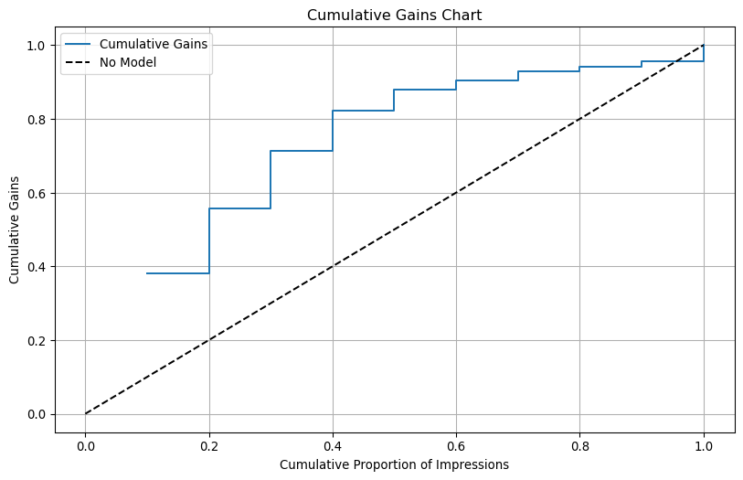

As a developer of games for mobile devices, TZ gaming has achieved strong growth of its customer base. A prominent source of new customers has come from ads displayed through the Vneta ad-network. A mobile-ad network is a technology platform that serves as a broker between (1) app developers (or publishers) looking to sell ad space and (2) a group of advertisers.
App developers sell “impressions”, i.e., a space where an ad can be shown, through the Vneta network to companies such as TZ gaming looking to advertise to app users. Vneta acts as a broker for 50-60 millions impressions/ads per day. TZ gaming uses ads to appeal to prospective customers for their games. They generally use short (15 sec) video ads that help to emphasize the dynamic nature of the games. In the past, TZ has been able to, approximately, break-even on ad-spend with Vneta when calculating the benefits that can be directly attributed to ad click-through. Many senior executives at TZ believe that there are additional, longer-term, benefits from these ads such as brand awareness, etc. that are harder to quantify.
Currently, TZ has access to very limited data from Vneta. Matt Huateng, the CEO of TZ gaming, is intrigued by the potential for data science to enhance the efficiency of targeted advertising on mobile devices. Specifically, two options are under consideration: (1) Buy access to additional data from Vneta and use TZ’s analytics team to build targeting models or (2) Subscribe to Vneta’s analytics consultancy service, which provides impression-level click-through rate predictions based on Vneta’s proprietary data and algorithms.
Vneta has shared behavioral information linked to 115,488 recent impressions used to show TZ ads and has also provided a set or predictions based on their own (proprietary) algorithm. Matt is unsure if the consulting services offered by Vneta will be worth the money for future ad campaigns and has asked you to do some initial analyses on the provided data and compare the generated predictions to Vneta’s recommendations. The following targeting options will be evaluated to determine the best path forward.
Options:
Spam all prospects
Continue with the current targeting approach
Use predictions from a logistic regression model for ad targeting
Use predictions generated by Vneta for ad targeting
Assumptions
The assumptions used for the analysis are as follows: • Targeting of impressions to consumers covered by the Vneta ad-network to date has been (approximately) random • Cost per 1,000 video impressions (CPM) is $10 • Conversion to sign-up as a TZ game player after clicking on an ad is 5% • The expected CLV of customers that sign-up with TZ after clicking on an ad is approximately $25 • The price charged for the data by Vneta is $50K • The price charged for the data science consulting services by Vneta is $150K
Approach:
• Use the 87,535 rows in the data with “training == ‘train’” to estimate different models. Then generate predictions for all 115,488 rows in the dataset • Options 1-4 should be evaluated only on the predictions generated for the 27,953 rows in the data with “training == ‘test’”. These are the observations that were not used to estimate your model • Extrapolate the cost and benefits for options 1-4 above for an upcoming advertising campaign where TZ will commit to purchase 20-million impressions from Vneta
TZ gaming has decided to use logistic regression for targeting. This is a powerful and widely used tool to model consumer response. It is similar to linear regression but the key difference is that the response variable (target) is binary (e.g., click or no-click) rather than continuous. For each impression, the logistic regression model will predict the probability of click-through, which can be used for ad targeting. Like linear regression, you can include both continuous and categorical predictors in your model as explanatory variables (features). Matt is eager to assess the value of logistic regression as a method to predict ad click-through and target prospects and has asked you to complete the following analyses.
TZ Gaming: Optimal Targeting of Mobile Ads
Each row in the tz_gaming dataset represents an impression. For each row (impression), we have data on 21 variables. All explanatory variables are created by Vneta based on one month tracking history of users, apps, and ads. The available variables are described in below.
training – Dummy variable that splits the dataset into a training (“train”) and a test (“test”) set
inum – Impression number
click – Click indicator for the TZ ad served in the impression. Equals “yes” if the ad was clicked and “no” otherwise
time – The hour of the day in which the impression occurred (1-24). For example, “2” indicates the impression occurred between 1 am and 2 am
time_fct – Same as time but the is coded as categorical
app – The app in which the impression was shown. Ranges from 1 to 49
mobile_os – Customer’s mobile OS
impup – Number of past impressions the user has seen in the app
clup – Number of past impressions the user has clicked on in the app
ctrup – Past CTR (Click-Through Rate) (x 100) for the user in the app
impua – Number of past impressions of the TZ ad that the user has seen across all apps
clua – Number of past impressions of the TZ ad that the user has clicked on across all apps
ctrua – Past CTR (x 100) of the TZ ad by the user across all apps
imput – Number of past impressions the user has seen within in the hour
clut – Number of past impressions the user has clicked on in the hour
ctrut – Past CTR (x 100) of the user in the hour
imppat – Number of past impressions that showed the TZ ad in the app in the hour
clpat – Number of past clicks the TZ ad has received in the app in the hour
ctrpat – Past CTR (x 100) of the TZ ad in the app in the hour
rnd – Simulated data from a normal distribution with mean 0 and a standard deviation of 1
pred_vneta – Predicted probability of click per impressions generated by Vneta’s proprietary machine learning algorithm
id – Anonymized user ID
Note that there is a clear relationship between the impressions, clicks, and ctr variables within a strata. Specifically:
ctrup = clup/impup
ctru = clu/impu
ctrut = clut/imput
ctrpat = clpat/impat
The last three letters of a feature indicate the sources of variation in a variable:
u — denotes user
t — denotes time
p — denotes app
a — denotes ad
Logistic Regression
import pandas as pdtz_gaming = pd.read_parquet("data/tz_gaming.parquet")print(tz_gaming)
For OR (Odds Ratio) As another hour is added to tim_fct[2], the model suggest that the odds of clicking will decrease by a factor of 0.622 or by 37.8% that is when keeping all other variable in the model constant.
For OR (Odds Ratio) As another hour is added to tim_fct[3], the model suggest that the odds of clicking will decrease by a factor of 0.718 or by 28.2% that is when keeping all other variable in the model constant.
And so on for all the rest of the features.
Chi-Square Citical Value
from scipy.stats import chi2df=76alpha_0_05 = chi2.ppf(1-0.05,df)alpha_0_01= chi2.ppf(1-0.01,df)print(alpha_0_05,alpha_0_01)
97.35097037903296 107.58254478061235
The logistic regression chi square value (970) is so much higher than both the calculated chi-square critical value above(97, 107). Therefore, the difference between the observed data and expected data is extremely large, thus reject the null hypothesis.
Model Fit Metrics
Metric
Value
McFadden Pseudo R²
0.109, Indicates modest model fit (0.2–0.4 is strong)
Adjusted Pseudo R²
0.092, Slightly adjusted down for number of predictors
AUC
0.792, Good discrimination power (0.7–0.8 = good)
Log-likelihood
-3946.072 higher is better
AIC
8046.145, Lower = better fit
BIC
8768.389, Penalizes complexity more than AIC
Chi-squared (df=76)
968.279, Strong model signal (p < 0.001)
Number of Observations
87,535,Large dataset, good statistical power
Based on the p=value the most significant features are app2. app13, app14, mobile_os, impua,clua and ctrua. Now let use a different method to see the variable that is the most important. However, first let us see the plot of the classifier (clf)
The app variable has the highest importance because it has the highest decrease in AUC after permutted. Impua comes second which still contributes significantly on model predictions. Then, mobile_os is next important and the last three is time_fct, clua, ctrua have way less impact on model predictions. The chi square of 968 is way above our critical value of 97 and 107, which means that there is a greater deviation between observed and expected frequencies, suggesting that more variables are more likely to be dependent or assoicated from each other, which is also supported by the p_value less than 0.001. The Pseudo R-Squared of 0.109 or 0.092 when adjusted indicates the goodness of fit for logistic regression, higher means better fit. This number shows on how well the independent variales explain the dependent variables.
/tmp/ipykernel_45280/4094291988.py:1: SettingWithCopyWarning:
A value is trying to be set on a copy of a slice from a DataFrame.
Try using .loc[row_indexer,col_indexer] = value instead
See the caveats in the documentation: https://pandas.pydata.org/pandas-docs/stable/user_guide/indexing.html#returning-a-view-versus-a-copy
tz_train["pred_logit"]= clf.predict(tz_train)["prediction"]
/tmp/ipykernel_45280/2027560838.py:1: SettingWithCopyWarning:
A value is trying to be set on a copy of a slice from a DataFrame.
Try using .loc[row_indexer,col_indexer] = value instead
See the caveats in the documentation: https://pandas.pydata.org/pandas-docs/stable/user_guide/indexing.html#returning-a-view-versus-a-copy
tz_train["pred_rnd"]= clf_rnd.predict(tz_train)["prediction"]
For Odd Ratio, when you increase the ctrpat (click throgh put rate) by one unit, the odds of the outcome which is clicking increases by a factor of 1.615 or 61.5% while other variables remain constant.Meanwhile, a unit increase only by a factor of 1.002 for clpt (past clicks in a specific hour) and no effect on odd of clicking for the feature imppat (the number of past impression that showed a TZ ad)
Using the coefficient and the plot, an increase in the number of past impression that showed a TZ ad(immpat) has a insignificant negative correlation(-0.00) with odds of clicking. This shows in both regression and plot. Then, there is a slight positive coeffecient(0.00) between clpat and the odds of clicking. Finally, we have considerable positive correlation(0.48) between ctrpat and the odds of clicking. Both of these shows in the plot as well.
all p_values are less than 0.05 implies on the significant effect of imppat, ctrpat and clpat on the odds of clicking. In fact, they all have three asterisk which amplifies the level of statistical significance of these three variables.
Logistic regression (GLM)
Data : tz_train
Response variable : click
Level : yes
Explanatory variables: imppat, ctrpat
Null hyp.: There is no effect of x on click
Alt. hyp.: There is an effect of x on click
OR OR% coefficient std.error z.value p.value
Intercept 0.004 -99.6% -5.529 0.068 -80.814 < .001 ***
imppat 1.000 0.0% 0.000 0.000 5.460 < .001 ***
ctrpat 1.733 73.3% 0.550 0.030 18.422 < .001 ***
Signif. codes: 0 '***' 0.001 '**' 0.01 '*' 0.05 '.' 0.1 ' ' 1
Pseudo R-squared (McFadden): 0.031
Pseudo R-squared (McFadden adjusted): 0.031
Area under the RO Curve (AUC): 0.674
Log-likelihood: -4290.903, AIC: 8587.805, BIC: 8615.945
Chi-squared: 278.619, df(2), p.value < 0.001
Nr obs: 87,535
clf_mc2.plot("pred")
Interpretation
The coefficient of ctrpat increased from 0.48 to 0.55, and the odds ratio rose from 61.5% to 73.3%. This suggests that removing clpat revealed the true impact of the remaining explanatory variables. While Pseudo R-Squared and AUC were not significantly affected, the predicted plot now shows a clearer relationship between the odds of clicking and the variables imppat and ctrpat. Since imppat and clpat have a high correlation of 0.97, multicollinearity exists, which can make coefficient estimates unstable and affect model interpretation. By omitting one of these highly correlated variables, we mitigate this issue, leading to a more interpretable model. This is evident in the plot, where the relationship between ctrpat, imppat, and the odds of clicking is now more clearly observed.
Introducing variables like time_fct and app into a logistic regression model with imppat, clpat, and ctrpat can alter prediction plots by changing the relationships between predictors and the outcome. These new variables may interact with existing ones, influencing both the direction and magnitude of effects. Additionally, they can act as confounder adjustments, revealing the true impact of imppat, clpat, and ctrpat on click likelihood by accounting for hidden biases. Conditioning effects may also emerge, as the behavior of existing predictors shifts in the presence of time_fct and app, leading to different probability estimates. Ultimately, these changes are reflected in prediction plots, which visually capture the refined relationships between predictors and the outcome, offering a clearer interpretation of the model’s dynamics.
/tmp/ipykernel_45280/1756994838.py:2: SettingWithCopyWarning:
A value is trying to be set on a copy of a slice from a DataFrame.
Try using .loc[row_indexer,col_indexer] = value instead
See the caveats in the documentation: https://pandas.pydata.org/pandas-docs/stable/user_guide/indexing.html#returning-a-view-versus-a-copy
tz_test["pred_logit_dec"] = (tz_test.groupby("training").pred_logit.transform(rsm.xtile, 10, rev=True))
import matplotlib.pyplot as pltbc= dec_tab.plot.bar(x="pred_logit_dec", y="ctr", legend=False)bc.set_xlabel('Decile')bc.set_ylabel ("click through rate (CTR)")bc.set_title ("Click Through Rate by Decile")bc.axhline(dec_tab["ctr"].mean(), color='r', linestyle='--')plt.show()print(tz_train)
plt.figure(figsize=(10, 6))plt.plot(dec_tab['cum_prop'], dec_tab['cum_gains'], label='Cumulative Gains', drawstyle='steps-post')plt.plot([0, 1], [0, 1], 'k--', label='No Model') # Labeling the plotplt.title('Cumulative Gains Chart')plt.xlabel('Cumulative Proportion of Impressions')plt.ylabel('Cumulative Gains')plt.legend()plt.grid(True)# Show the plotplt.show()

Confusion Matrix
cpm =10# cost per 1000 video impressionconversion_rate=0.05# conversion to sign up with TZ after clicking on an adclv=25# expected clv of customers that sign up with TZ after clicking on an adthreshold= (cpm/(conversion_rate * clv *1000))threshold
0.008
tz_test = tz_gaming[tz_gaming["training"] =="test"].copy()tz_test["click_yes"]= tz_test["click"].apply(lambda x: 1if x =="yes"else0if x =="no"else np.nan)tz_test["click_yes"] = tz_test["click_yes"].astype(float)tz_test
The First Model correctly identified all 271 true positives, achieving 100% recall but only 0.97% precision due to 27,606 false positives. In contrast, the RND model predicted no positives, resulting in perfect specificity and 99.02% accuracy, but 0% recall and no ability to detect actual clicks. Although the First Model’s accuracy was just 1.03%, it was more useful than the RND model because it captured all true click events. However, its extremely low precision highlights inefficiency, as most predicted clicks were incorrect. This comparison shows that in imbalanced datasets, metrics like precision, recall, and F1 score are more informative than accuracy alone
Model Comparison
Cost Information
Cost per 1,000 video impressions (CPM) is $10
Conversion to sign-up as a TZ game player after clicking on an ad is 5%
The expected CLV of customers that sign-up with TZ after clicking on an ad is approximately $25
The total cost of the data from Vneta is $50K
The total cost charged for the data science consulting services by Vneta is $150K
cpm =10# cost per 1000 video impressionconversion_rate=0.05# conversion to sign up with TZ after clicking on an adclv=25# expected clv of customers that sign up with TZ after clicking on an adtotal_impressions =20_000_000# given in the problem aboveadditional_cost_VNETA =50_000# cost of the data from VNETA DATAadditional_cost_Consulting=150_000#cost of thr consulting services by VNETAadditional_cost_spamming=0#cost for spamming with no VNETA involvedef calculate_break_even_response_rate(cpm,conversion_rate, clv, total_impressions,additional_cost): total_cost = (total_impressions/1000) *cpm +additional_cost margin = total_impressions * conversion_rate * clv break_even_rate_of_response= total_cost/marginreturn break_even_rate_of_responsebreak_even_response_rate_spamming= calculate_break_even_response_rate(cpm,conversion_rate, clv, total_impressions, additional_cost_spamming)break_even_response_rate_spamming
The Vneta model demonstrates the highest ROME at 3.105933, making it the most efficient in marketing budget utilization. It generates a profit of 151.29, slightly lower than the Logit model but still highly effective. This model is ideal for scenarios where marketing efficiency and budget allocation are top priorities. On the other hand, the Logit model achieves the highest profit of 167.43, though its ROME is lower than that of the Vneta model, indicating reduced spending efficiency. It is best suited for cases where maximizing total profit is more important than efficiency. In contrast, both the Rnd and Spam models underperform in terms of profit and ROME compared to predictive models, suggesting that predictive strategies significantly outperform non-targeted methods. Overall, the Vneta model is recommended for its superior marketing efficiency, while the Logit model is preferred for maximizing profit. The choice between these two depends on whether ROI or total profit is the primary objective.
The Logit model leads in profit generation with $119,793.94, making it the top choice for revenue maximization, though its ROME stands at 1100.84, which, while strong, is not the highest. The Rnd model lags behind with a profit of $42,914.89 and a ROME of 429.73, reflecting lower efficiency and profitability. Similarly, the Spam model records $42,371.12 in profit, closely matching the Rnd model, but has the lowest ROME at 151.579877, making it the least effective approach. The Vneta model, on the other hand, secures a high profit of $108,245.98 and boasts the highest ROME at 2222.253, demonstrating superior marketing efficiency. This makes Vneta the optimal choice for balancing profit and marketing spend efficiency. Given its outstanding ROME, the Vneta model is the primary recommendation for maximizing investment returns. However, the Logit model remains a solid alternative for cases where absolute profit takes precedence over efficiency. The new data aligns with previous recommendations, reaffirming Vneta’s leadership in efficiency despite slightly lower profits than the Logit model. The results confirm that predictive models significantly outperform non-targeted approaches like the Rnd and Spam models. Ultimately, the Vneta model is best for those prioritizing a balance of high profit and peak efficiency, while the Logit model is the go-to option for pure profit maximization.